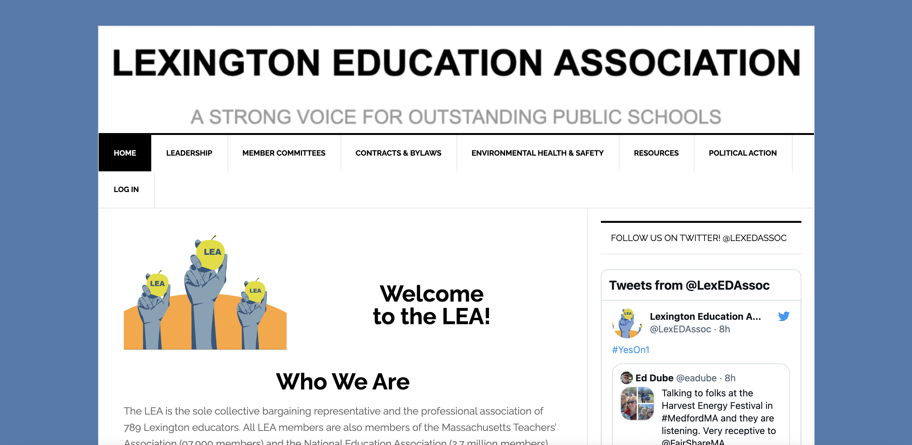

Responsive Redesign - Lexington, MA Teachers' Union Website
Project Description

This website was created for the Responsive Redesign assignment in Brown University's User
Interface/User Experience course.
I chose to recreate this website as it is the website for the teachers' union that my mom belongs to. I
hope that this Redesign
can potentially be implemented on the actual website and can help others learn more about the important
work that the Lexington
Public School Teachers' Union does for its members, their students, and the Lexington, MA community.
To create this project, I:
- Analyzed the current usability and accessibility of the website
- Created low-fidelity mockups of the website using wireframes
- Constructed a visual-design style guide for the website, integrating Lexington's colors and mascot
into the design.
- Mocked up a high-fidelity prototype of the website using Figma.
- Coded the final website (which you are on right now) using CSS and HTML.
Usability Problem Identification
- Top header renders in low resolution
in some
places, and also does not include an image description
- Twitter sidebar confuses reader about
where to first look
when navigating the page
- Logo positioning at the top of the website makes it hard to tell where relevant information is.
- Hard to differentiate between
sections of the website
— What we do vs. who we are
- Bulleted lists are very long and hard
to skim; hard
to parse out information from the list
- Navbar conceptual model makes sense;
however some of the
headings lead to pages and some are just there so that you can look at the subpages
and then follow up
from there.
- Font of headings often hard to read, especially for the character 'W'
- Website’s color scheme does not represent the brand of the union or the school district
(blue/yellow)
Accessibility Problem Identification
I found a couple of accessibility problems as well by WebAIM WAVE. I found that the algorithm
pointed out some interesting nuances about the
webpage, such as the contrast, that I had not previously considered and I believe are incredibly
important to fix to ensure people can access the union's important resources. However, I was happy
to see that this website, which is used by many, did not have many
accessibility problems to begin with, and I did not notice any accessibility concerns that the
algorithm did not point out.
Contrast inadequate when
highlighting over something on
the navbar
The websites' images do not include image descriptions, making it difficult for screenreaders to
parse through the website.
Website's html code has no heading 2's